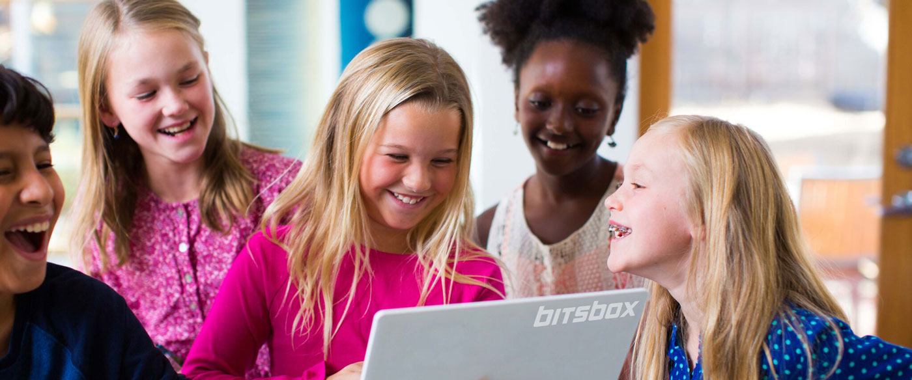

PDX Kids Code Club
Home
Join
Chapters
Schedule
Ways to Support
Our Story
PDX Kids Code Club started out slowly & organically in 2016 after my son showed a few friends a website game we had built together. These friends also wanted to learn how to make their sites & games & soon enough it turned into weekly planned after school mettings where I'd help the kids build up their own projects little by little, learning what they needed to learn as new ideas came to them. After a few months, my son's little group of friends had snow balled into three dozen kids from his school, across all grades  in their elementary school who had heard about what they had been doing one by one. Fast-forward to now & we have five chapters throughout Portland, over 400 members & hundreds of volunteers making this club happen.
Why?
If you're asking yourself
"why would kids code?"
,
we have seven convincing reasons why.
A Second Language-
Coding is very much like learning a second language, & the children learn to code, the easier it'll be for them to pick it up.
Problem Solving-
Coding inherently teches kids how to solve problems both logically & creatively, on & off of technology.
Learning to Fail-
Coders are failures, & great at it. To code is to fail until you succeed, which loops back to reason number two, problem solving. Coding encourages kids to be okay with failure, to learn from it & continue on.
Computational Thinking-
Children who code, learn how to break down big ideas into sections & order to be able to complete the big picture. This way of thinking is incredibly helpful when it comes to things that most would deem overwhelming.
Imagination Meets Creativity-
while coding is often just thought as creating functioning pieces, it's also creating the
looks
of the pieces. When developing an idea, you also have to come up with a design plan; how it'll look, makes a user feel & how to get the grand idea across even before the first click.
Real Life Math-
In school children wil hear over & over agina about needing math in real life but rarely do they ever actually experience this phenomenon before adulthood. While it's true you do not need to be excellent at math in order to be a coder, it does help, & learning to code will encourage kids to appreciate "real life math" importance.
Set up for Success-
Not only is coding a fun after school activity, it is an actual skill highly sought after AND paid well for. Children who learn to code are getting a great head start & huge advantage to great employment opportunities in their not so-far future.
How?